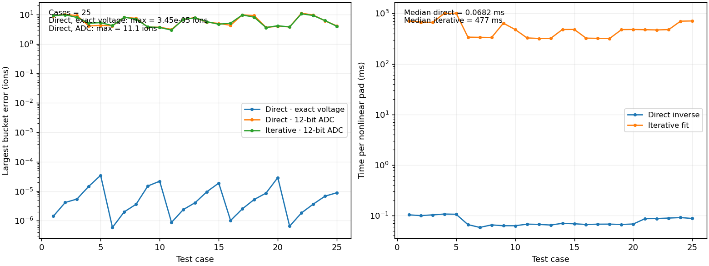

| Quantity | Value |
|---|---|
| Cases | 25 |
| Maximum noiseless bucket error | 3.44962e-05 ions |
| Maximum noiseless total-charge error | 2.28975e-05 ions |
| Maximum difference from iterative fit | 0.000327164 ions |
| Maximum error with 12-bit ADC | 11.1003 ions |
| Iterative fit: maximum error with 12-bit ADC | 10.5806 ions |
Median direct inversion: 0.068 ms/pad. Median iterative fit: 477.4 ms/pad. Timings exclude preparation; the first iterative case is excluded from its median. No detector simulation, electronics generation or plots are included.
Preparation is shared by all pads with the event's timing. The first row includes first-use compilation.
| Event shape | Existing preparation (ms) | Additional direct-inverse preparation (ms) |
|---|---|---|
| 0 | 84.86 | 7.11 |
| 3 | 6.04 | 3.57 |
| 4 | 6.44 | 3.75 |
| 6 | 6.03 | 3.54 |
| 7 | 7.45 | 5.13 |